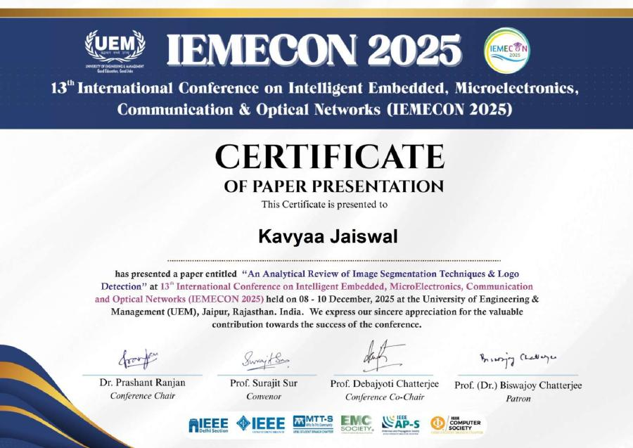

PUBLICATION / 202501 / IEMECON 2025
AI & DATA SCIENCE / BUILDER
Every dataset has a story.
I build the systems that help uncover it.
02 / SELECTED WORK
Eight systems across analytics, machine learning, forecasting, computer vision and applied AI.
03 / ABOUT
I like the space between raw information and a useful decision — finding patterns, building models, and turning the result into something people can actually use.
04 / EXPERIENCE
Applied engineering work across industrial automation, analytics and machine learning.
Central Automation Cell
05 / TOOLKIT
A practical stack for moving from raw data to models, interfaces and usable systems.
Python · SQL · Java
Pandas · NumPy · Scikit-learn · XGBoost · PyTorch
Gemini · LangChain · FAISS · RAG · Multi-Agent Systems
Plotly · Power BI · FastAPI · Flask · React
06 / RESEARCH + IP
Selected publication and intellectual-property work, presented as part of the same visual archive.

PUBLICATION / 202507 / CREDENTIALS
Actual certificate previews — click any document to open the full credential.
08 / ACHIEVEMENT
ACADEMIC PERFORMANCE
A single focused marker — no repetition, no clutter.
09 / CONTACT